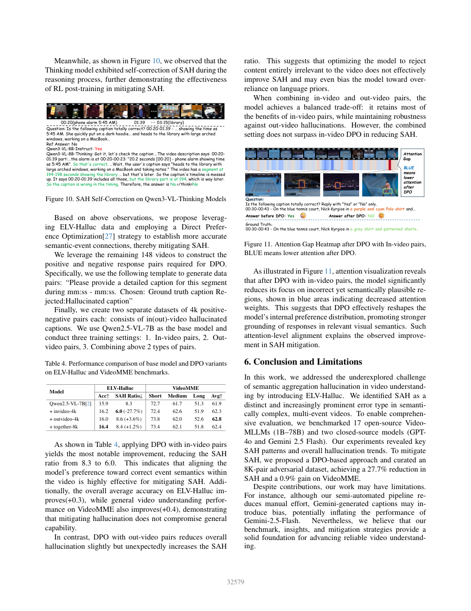

一句话结论
ELV-Halluc把“看见真实元素但绑定错事件”变成可测负例，但低SAH比率不等于可靠回答；in-video DPO的最佳SAH降幅和out-video DPO的最佳通用分数增益属于不同配置，混合8K并未降低SAH。[1]
问题定义与方法概述
语义聚合幻觉（Semantic Aggregation Hallucination，SAH）关注跨事件错误组合。基准为每个真实描述生成同视频其他事件的替换描述（in-video）和未见于caption集合的替换描述（out-video），覆盖细节、对象、动作与陈述内容。真/假问题都答对才算一个对抗对成功；不是自由文本幻觉率。（§3）[1]
测试集含200视频、4800个二元问题、1600三元组及3200共享GT的对抗对，平均视频672.4秒；348个筛选视频中另外148个留作训练。Gemini起草caption、人类纠正，GPT-4o生成/复查负例；captioner使用音频和视觉，负例验证主要基于描述文本。（正文表1、补充图24–29）[1][2]
关键发现与核心实验
式1为SAH=(OutAcc−InAcc)/(1−InAcc)，In/Out用0–1准确率。它是差值代理，不能独立识别跨事件错误的因果占比。[1]
| 表4配置 | ELV Acc | SAH↓ | VideoMME↑ |
|---|---|---|---|
| Qwen2.5-VL-7B基线 | 15.9 | 8.3 | 61.9 |
| in-video 4K | 16.2 | 6.0 | 62.3 |
| out-video 4K | 16.0 | 8.6 | 62.8 |
| mixed 8K | 16.4 | 8.4 | 62.4 |
in-video降低SAH相对27.7%，但VideoMME仅增0.4点；out-video增加VideoMME0.9点却恶化SAH；mixed的SAH高于基线。不能把摘要/结论最佳数值拼成同一模型收益。（正文p.8，计算已复核）[1]

增帧通常改善整体准确率却可能提高SAH比率；这不等于SAH绝对错误数必增。Video-RoPE的低SAH伴随很低的In/Out成功率；模型级相关和注意力热图不能替代机制因果对照。（§4–5）[1]
公开数据与实现审计
固定作者仓库40a193b876e337e651202c14191ac927734f04be，实际下载并解析测试/DPO文件，使用合成回答执行评测核心逻辑；保留原始代码，只在测试架构中替换输入路径、移除未使用的绘图库导入。[4]
- 测试4800行/200视频与论文一致，三元组顺序和分组全部通过；
(video,question)独特组合4201，不能把共享GT等重复直接当错误。 - 公开DPO为8270行/139视频文件名，不自动等于论文的148视频实验manifest；与测试精确文件名交集为空，但不证明父节目、重复上传或预训练无重叠。
- README称添加
model_response即可评测，但全部测试行没有代码要求的ref_answer；实测仅加response触发KeyError。 - 补齐标签后，全No/全Yes均给In/Out=0、SAH=0；完美三元组则在SAH计算处除零。这是可复现退化边界，不是模型真实实验结果。
- 子串解析把
No, yesterday was different判yes、unknown判no。需严格答案解析、invalid统计和完整分母，不能据此臆测论文排名受影响的幅度。
完整审计与输出见独立全文分析及同目录metric-audit.py、metric-audit-results.json。
局限、成本与版本
- 源视频是聚类单位，4800问题不是独立样本；四模型三次稳定性试验存在，但没有完整源视频聚类区间、DPO显著性及独立人类上界。人类修订不等于人类效度验证。[1][2]
- in/out负例难度、熟悉度和可见性未完全匹配；caption未写不等于像素不存在。Gemini参与生成且被测，表2明确警告公平性；GPT家族亦跨角色。[1][2]
- 主表帧预算不等：Qwen最多256、InternVL3最多64、GPT-4o50。DPO评测64帧，训练H100/1epoch/batch16/lr1e-6/32768序列；GPU数、总GPU-hours、延迟、峰值显存、API与人工总成本未报。[2]
- 正式题名不含Long，旧稿/README含Long；DOI尚未精确核验。表3引用VRoPE/VideoRoPE错配，补充相关性文字0.83/热图0.88及mixed收益叙述冲突保留，不静默修正。[1][2][3]
对当前Wiki判断的影响
topics/video-understanding应把证据覆盖和事件绑定分开验收：返回正确片段仍需排除跨事件错接，报告GT接受率、In/Out成对成功率、SAH及无效回答率。先修复manifest/解析/分母、按源视频给区间，再进行同预算干预；不把低比率当作无幻觉结论。与topics/datasets-metrics-and-benchmark-reliability的指标效度边界一致；不外推为视频剪辑叙事理解证据。
原始链接
Sources
[1] https://openaccess.thecvf.com/content/CVPR2026/papers/Lu_ELV-Halluc_Benchmarking_Semantic_Aggregation_Hallucinations_in_Video_Understanding_CVPR_2026_paper.pdf
[2] https://openaccess.thecvf.com/content/CVPR2026/supplemental/Lu_ELV-Halluc_Benchmarking_Semantic_CVPR_2026_supplemental.pdf
[3] https://openaccess.thecvf.com/content/CVPR2026/html/Lu_ELV-Halluc_Benchmarking_Semantic_Aggregation_Hallucinations_in_Video_Understanding_CVPR_2026_paper.html
[4] https://github.com/hlsv02/ELV-Halluc/tree/40a193b876e337e651202c14191ac927734f04be